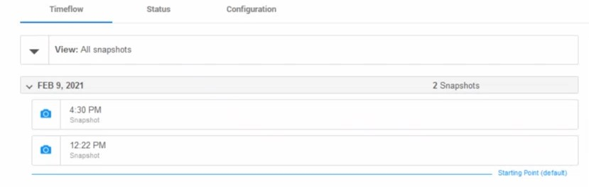
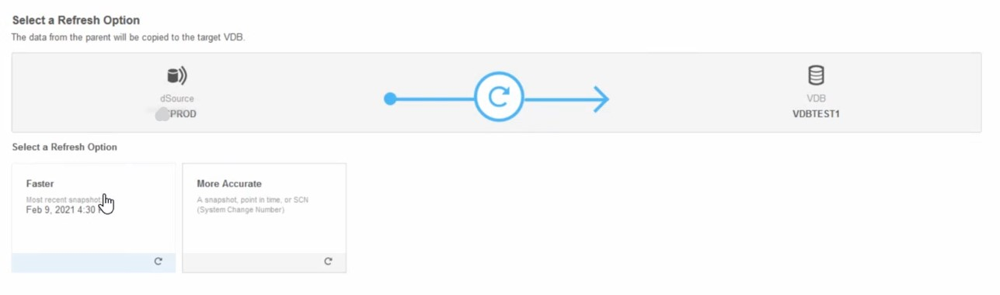

This was first published on https://www.dbi-services.com/blog/delphix-a-glossary-to-get-started/ (2021-03-02)
Republishing here for new followers. The content is related to the versions available at the publication date.
.
dbi-services is partner of Delphix – a data virtualization platform for easy cloning of databases. I’m sharing a little glossary to get started if you are not familiar with the terms you see in doc, console or logs.
The setup console is the first interface you will access when installing Delphix engine (“Dynamic Data Platform”). You import the .ova and start it. If you are on a network with DHCP you can connect to the GUI, like at http://http://192.168.56.111/ServerSetup.html#/dashboard. If not you will access to the console (also available through ssh) where you have a simple help. The basic commands are `ls` to show what is available – objects and operations, `commit` to validate your changes, `up` to… go up.
network
setup
update
set hostname="fmtdelphix01"
set dnsServers="8.8.8.8, 1.1.1.1"
set defaultRoute="192.168.56.1"
set dnsDomain="tetral.com"
set primaryAddress="192.168.56.111/24"
commit
And anyway, if you started with DHCP I think you heed to disable it ( network setup update ⏎ set dhcp=false ⏎ commit ⏎)
When in the console, the harder thing for me is to find the QWERTY for ” and = as the others are on the numeric pad (yes… numeric pad is still useful!)
Once you have an ip address you can ssh to it for the command line console with the correct keyboard and copy/paste. On thing that you can do only there and before engine initialization is storage tests
delphix01> storage
delphix01 storage> test
delphix01 storage test> create
delphix01 storage test create *> ls
Properties
type: StorageTestParameters
devices: (unset)
duration: 120
initializeDevices: true
initializeEntireDevice: false
testRegion: 512GB
tests: ALL
Before that you can set a different duration and testRegion if you don’t want to wait. Then you type `commit`to start it (and check the ETA to know how many coffees you can drink) or `discard` to cancel the test.
Then you will continue with the GUI and the first initialization will run the wizard: choose “Virtualization engine”, setup the admin and sysadmin accounts (sysadmin is the one for this “Setup console” and admin the one for the “Management” console), NTP, Network, Storage, Proxy, Certificates, SMTP. Don’t worry many things can be changed later. Like adding network interfaces, adding new disk (just click on rediscover and accept them as “Data” usage, add certificates for HTTPS, get the registration key, and add users. The users here are for this Server Setup GUI or CLI console only.
The main reason for this blog post is to explain the names that can be misleading because named differently at different places. There are two graphical consoles for this engine once setup is done:
Once you get this, everything is simple. I’ll mention the few other concepts that may have a misleading name in the console or the API. Actually, there’s a third console, the Self Service with the /jetstream/#mgmt in the URL that you access from the Management console, with the Management user. And of course there are the APIs. I’ll cover only the Management console in re rest of this post.
It’s subtitle in the login screen is “Dynamic Data platform” and it is actually the “Virtualization” engine. There, you use the “admin” user, not the “sysadmin” one. Or any newly added one. The Manage/Dashboard is the best place to start. The main goal of this post is to explain quickly the different concepts and their different names.
An Environment is the door to other systems. Think of “environments” as if it was called “hosts”. You will create an environment for source and target hosts. It needs only ssh access (the best is to add the dephix ssh key in the target’s .ssh/authorized keys). You can create a dedicated linux user, or use the ‘oracle’ one for simplicity. It only needs a directory that it owns (I use “/u01/app/delphix”) where it will install the “Toolkit” (about 500MB used but check the prerequisites). That’s sufficient for sources but if you want to mount clones you need sudo provileges for that:
cat > /etc/sudoers.d/delphix_oracle <<'CAT'
Defaults:oracle !requiretty
oracle ALL=NOPASSWD: /bin/mount, /bin/umount, /bin/mkdir, /bin/rmdir, /bin/ps
CAT
And that’s all you need. There’s no agent running. All is run by the Delphix engine when needed, through ssh.
Well, I mention ssh only for operations, but the host must be able to connect to the Delphix engine, to send backups of dSource or mount a NFS.
Additionally, you will need to ensure that you have enough memory to start clones as I’m sure you will quickly be addicted to the easiness of provisioning new databases. I use this to check available memory in small pages (MemAvailable) and large pages (HugePages_Free):
awk '/Hugepagesize:/{p=$2} / 0 /{next} / kB$/{v[sprintf("%9d GB %-s",int($2/1024/1024),$0)]=$2;next} {h[$0]=$2} /HugePages_Total/{hpt=$2} /HugePages_Free/{hpf=$2} {h["HugePages Used (Total-Free)"]=hpt-hpf} END{for(k in v) print sprintf("%-60s %10d",k,v[k]/p); for (k in h) print sprintf("%9d GB %-s",p*h[k]/1024/1024,k)}' /proc/meminfo|sort -nr|grep --color=auto -iE "^|( HugePage)[^:]*" #awk #meminfo
You find it there: https://franckpachot.medium.com/proc-meminfo-formatted-for-humans-350c6bebc380
As in many places, you name your environment (I put the host name and a little information behind like “prod” or “clones”) and have a Notes textbox that can be useful for you or your colleagues. Data virtualization is about agility and self-documented tools are the right place: you see the latest info next to the current status.
In each environments you can auto-discover the Databases. Promote one as a dSource. And if the database is an Oracle CDB you can discover the PDBs inside it.
You can also add filesystem directories. And this is where the naming confusion starts: they are displayed here, in environments, as “Unstructured Files” and you add them with “Add Database” and clone them to “vFiles”…
And all those dSource, VDB, vFiles are “Datasets”. If you click on “dSources”, “VDBs” or “vFiles” you always go to “Datasets”. And there, they are listed in “Groups”. And in each group you see the Dataset name with its type (like “VDB” or “dSource”) and status (like “Running”, “Stopped” for VDBS, or “Active” or “Detached” for dSources). The idea is that all Datasets have a Timeflow, Status and Configuration. Because clones can also be sources for other clones. In the CLI console you see all Datasets as “source” objects, with a “virtual” flag that is true only for VDB or an unlinked dSource.
Don’t forget the Notes in the Status panel. I put the purpose there (why the clone is created, who is the user,…) and state (if the application is configured to work on it for example).
About the groups, you arrange them as you want. They also have Notes to describe it. And you can attach default policies to them. I group by host usually, and type of users (as they have different policies). And in the name of the group or the policy, I add a little detail to see which one is daily refreshed for example, or which one is a long-term used clone.
The first dataset you will have is the dSource. In a source environment, you have Dataset Homes (the ORACLE_HOME for Oracle) and from there a “data source” (a database) is discovered in an environment. And it will run a backup sent to Delphix (as a device type TAPE, for Oracle, handeled by Delphix libobk.so). This is stored in the Delphix engine storage and the configuration is kept to be able to refresh later with incremental backups (called SnapSync, or DB_SYNC or Snapshot with the camera icon). Delphix will then apply the incrementals on his copy-on-write filesystem. There’s no need for an Oracle instance to apply them. It seems that Delphix handles the proprietary format of Oracle backupsets. Of course, the archive logs generated during the backups must be kept but they need an Oracle instance for that so they are just stored to be applied on thin provisioning clone or refresh. If there’s a large gap and the incremental takes long, then you may opt for a DoubleSync where only the second one, faster, need to be covered by archived logs. 
So you see the points of Sync as snapshots (camera icon) in the timeflow and you can provision a clone from them (the copy-paste Icon in the Timeflow). Automatic snapshots can be taken by the SnapSync policy and will be kept to cover the Retention policy (but you can mark one to keep longer as well). You take a snapshot manually with the camera icon.
In addition to the archivelog needed to cover the SnapSync, intermediate archive logs and even online logs can be retrieved with LogSync when you clone from an intermediate Point-In-Time. This, in the Timeflow, is seen with “Open LogSync” (an icon like a piece of paper) and from there you can select a specific time.
In a dSource, you select the snapshot, or point-in-time, to create a clone from it. It creates a child snapshot where all changes will be copy-on-write so that modifications on the parent are possible (the next SnapSync will write on the parent) and modifications on the child. And the first modification will be the apply of the redo log before opening the clone. The clone is simply an instance on an NFS mount to the Delphix engine. 
Those clones become a virtual database (VDB) which is still a Dataset as it can be source for further clones.
They have additional options. They can be started and stopped as they are fully managed by Delphix (you don’t have to do anything on the server). And because they have a parent, you can refresh them (the round arrow icon). In the Timeflow, you see the snapshots as in all Datasets. But you also have the refreshes. And there is another operation related to this branch only: rewind.
This is like a Flashback Database in Oracle: you mount the database from another point-in-time. This operation has many names. In the Timeflow the icon with two arrows on left is called “Rewind”. In the jobs you find “Rollback”. And none are really good names because you can move back and then in the future (relatively to current state of course).
Another Datasource is vFiles where you can synchronize simple filesystems. In the environments, you find it in the Databases tab, under Unstructured Files instead of the Dataset Home (which is sometimes called Installation). And the directory paths are displayed as DATABASES. vFiles is really convenient when you store your files metadata in the database and the files themselves outside of it. You probably want to get them at the same point-in-time.
When a dSource is imported in Delphix, it is a Dataset that can be source for a new clone, or to refresh an existing one. As it is linked to a source database, you can SnapSync and LogSync. But you can also unlink it from the source and keep it as a parent of clones. This is named Detach or Unlink operation.
Managed Source Data is the important metric for licensing reasons. Basically, Delphix ingests databases from dSources and stores it in a copy-on-write filesystem on the storage attached to the VM where Delphix engine runs. The Managed Source Data is the sum of all root parent before compression. This means that if you ingested two databases DB1 and DB2 and have plenty of clones (virtual databases) you count only the size of DB1 and DB2 for licensing. This is really good because this is where you save the most: storage thanks to compression and thin provisioning. If you drop the source database, for example DB2 but still keep clones on it, the parent snapshot must be kept in the engine and this still counts for licensing. However, be careful that as soon as a dSource is unlinked (when you don’t want to refresh from it anymore, and maybe even delete the source) the engine cannot query it to know the size. So this will not be displayed on Managed Source Data dashboard but should count for licensing purpose.
{kind=link}
{kind=link}
{kind=link}